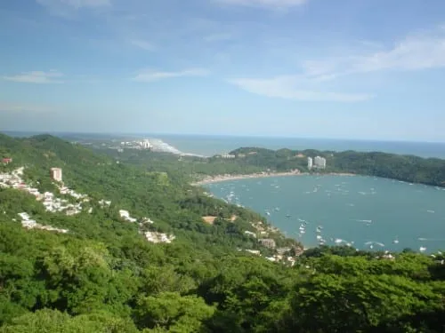
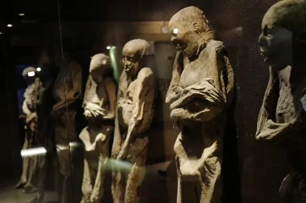
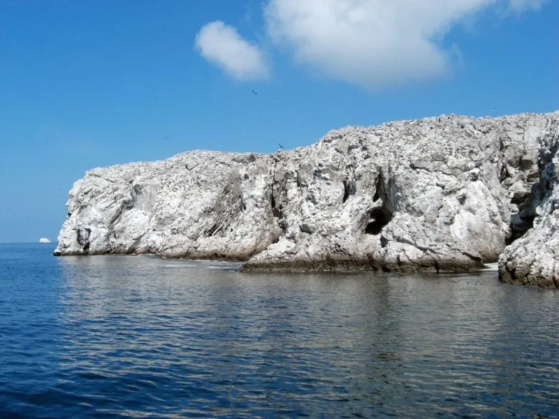
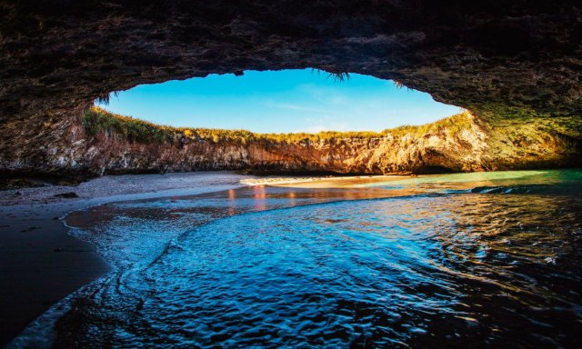
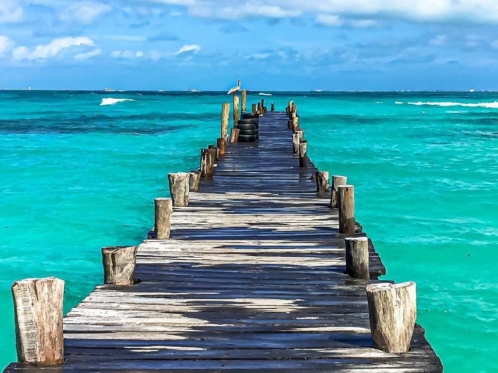
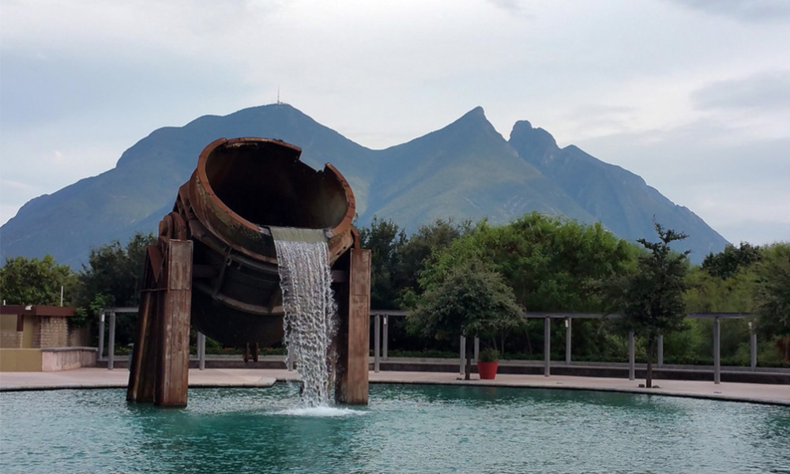
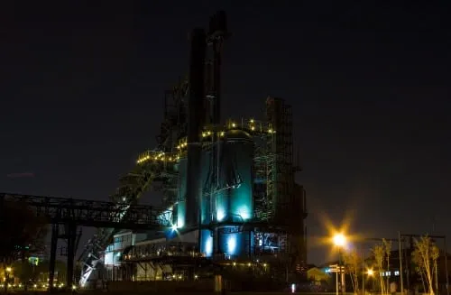
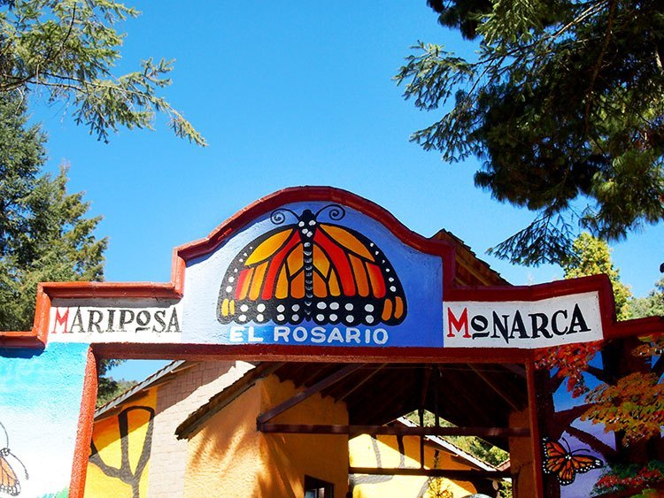

Acapulco es una de las preferencias de viaje en Mexico, tanto por los turistas como por los mexicanos. Esto debido a sus 360 días de sol, su vista única a la bahía, su ambiente informal y sus hoteles de primera calidad. Uno de los atractivos es caminar por el Malecón de Acapulco, considerado el primer destino turístico internacional del país. Otra zona que debes conocer es Acapulco Diamante que se extiende a lo largo de la Bahía de Puerto Marqués hasta Playa Revolcadero. Aquí encontrarás hoteles de lujo, residencias de artistas famosos como Luis Miguel, centros comerciales de lujo, campos de golf y un auditorio para eventos y conciertos. Por otro lado, no te puedes perder una visita a la Zona Dorada, donde se encuentran los más modernos y lujosos hoteles, los antros y centros nocturnos más famosos. Acapulco, es uno de los destinos para viajar en México que se encuentra muy cercano a la ciudad por lo que tardarás unas cuatro horas en carro desde el centro para llegar.
Aunque no sea una de las islas mexicanas habituales con arena fina y agua transparente o una zona arqueológica impresionante de la cultura mexicana, definitivamente las momias de Guanajuato es un lugar tenebroso y misterioso, considerado uno de los principales destinos de México para los más curiosos. Este sitio está compuesto por un conjunto de 100 cadáveres que fueron conservados por causas naturales. Lo más increíble es que fueron descubiertos en el siglo XIX en Guanajuato, mientras que la última reinauguración y reforma del lugar fue en 2007. Aquí podrás disfrutar desde una sala de proyección donde se muestra un vídeo con la introducción al museo, hasta la sala “Angelitos” donde se muestran momias de bebés vestidas de acuerdo a la tradición de los “Angelitos”. Es importante que sepas que la cantidad de visitantes que querían ver a las momias de Guanajuato aumentó considerablemente después de ser mostradas en la película “El Santo contra las momias de Guanajuato” en 1970, protagonizada por el mítico luchador el Santo, el enmascarado de plata.

Cuenta una leyenda urbana que durante la Segunda Guerra Mundial, el ejército mexicano hacía prácticas de bombardeos en este pequeño archipiélago ubicado en la Bahía de Banderas. Conocido como las Islas Marietas, en este lugar se pueden observar cavernas naturales cuyas rocas parecen como quemadas. En una de estas pequeñas islas volcánicas se encuentra una de las islas más espectaculares: Playa Escondida. Este lugar es un área natural protegida y de ingreso regulado por las autoridades mexicanas. Sin embargo, la fama que han ido ganando como un atractivo turístico de la Riviera Nayarit y Puerto Vallarta, han permitido que el turismo se pueda practicar. Es importante que sepas que es uno de los destinos para viajar en México que tiene algunas restricciones en cuanto a los lugares, justamente para cuidar el lugar. Las Islas Marietas se encuentran a 27 kilómetros de Nuevo Vallarta, a 35 kilómetros de Puerto Vallarta y a solo 8 kilómetros de Punta Mita.
 Playa del Carmen es considerado el Corazón de la Riviera Maya y por tal motivo no puedes irte de aquí sin conocer uno de los lugares turísticos de México más famosos de esta zona. Esta playa se ubica en la cabecera del municipio de Solidaridad en Quintana Roo, al sureste del país. La mayoría de los medios especializados han catalogado sus islas como las más bellas del mundo debido a su arena blanca y su mar cálido color turquesa. Entre ellas se encuentran Paamul, Paraíso, Tukan y Playa Mamitas. Si deseas hacer algo distinto puedes visitar Cozumel, a 45 minutos en ferry. En ella disfrutarás de parques naturales, bellas playas y el segundo arrecife más grande del mundo. Además, corresponde a uno de los sitios arqueológicos de México. Por otro lado, si prefieres un plan más de fiesta y de movimiento nocturno, te sorprenderá saber que Cancún se ubica a escasos 45 minutos en carretera de esta playa. Este es uno de los destinos más famosos de México para los jóvenes

El Parque Fundidora se encuentra en lo que fue la Siderúrgica, Compañía de Fierro y Acero de Monterrey. Este es uno de los atractivos turísticos en México que se encuentra a dos kilómetros al oriente de la Macroplaza. Posee variados espacios culturales, recreativos, deportivos y de negocios en medio de amplias áreas verdes, lagos y manantiales. Aquí podrás caminar por plazas, plazoletas, andadores, fuentes y amplios jardines con motivos escultóricos. Todo este ambiente, al igual que los llamados patios industriales, se encuentran en un entorno de vestigios industriales de lo que fue la siderúrgica. Otras actividades y lugares a destacar son las pistas para patinetas, el parque temático la Plaza Sésamo, los paseos en lancha y los auditorios para espectáculos.
 Si te encuentras de visita por el pintoresco Valle de Bravo, tienes que ir a uno de los destinos paradisíacos de México, la Reserva de la Biósfera Santuario de la Mariposa Monarca. Se encuentra en las zonas boscosas de Donato Guerra, Villa de Allende y Temascalcingo. Año tras año este país se convierte en morada de millones de Mariposas Monarca que viajan desde Canadá para habitar los bosques de oyamel de Michoacán y el Estado de Mexico. 5.000 kilómetros en 33 días recorren aproximadamente estos animales de tan solo un gramo de peso para llegar a su destino El santuario de 7,378 hectáreas constituye por sí sólo un espectáculo de incomparable riqueza natural que ante la visita de miles de mariposas se viste de tonalidades anaranjadas con motas negras. Admira a estos hermosos insectos descansando en la copa de los árboles o volando por el cielo azul.
